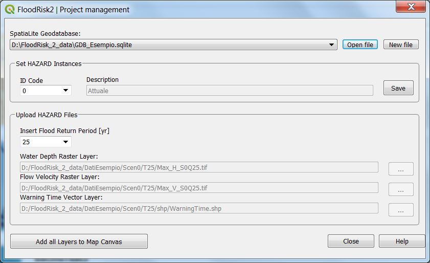

Project Management¶
The Project Management window allows you to load or create the geodatabase of the project. The geodatabase serves as a container of the input data. Below you can see an example of a project window with the chosen geodatabase and the list of input files.

The user must choose the name of the Spatialite geodatabase (* .sqlite). In the case of a new project, first create a new geodatabase using the “New file” button. For an existing project, select its geodatabase with the “Open file” button.
Once the geodatabase has been chosen, the data can be uploaded into it.
The data related to the hazard are grouped by instances, where the instances represent individual situations: for example the instance 0 represents the current situation, the instance 1 could represent the new hazard after a mitigation intervention.
Once an instance has been chosen, the hazard data can be uploaded into the project for different return periods.
Into the geodatabase the path of each file and its instance and return period are saved.
For a given return period the hazard data consists of three files:
Water Depth Raster Layer
Flow Velocity Raster Layer
Warning Time Vector Layer
By clicking the button “Add to Map Layers to Canvas” you can see in QGIS the layers that are part of the project.